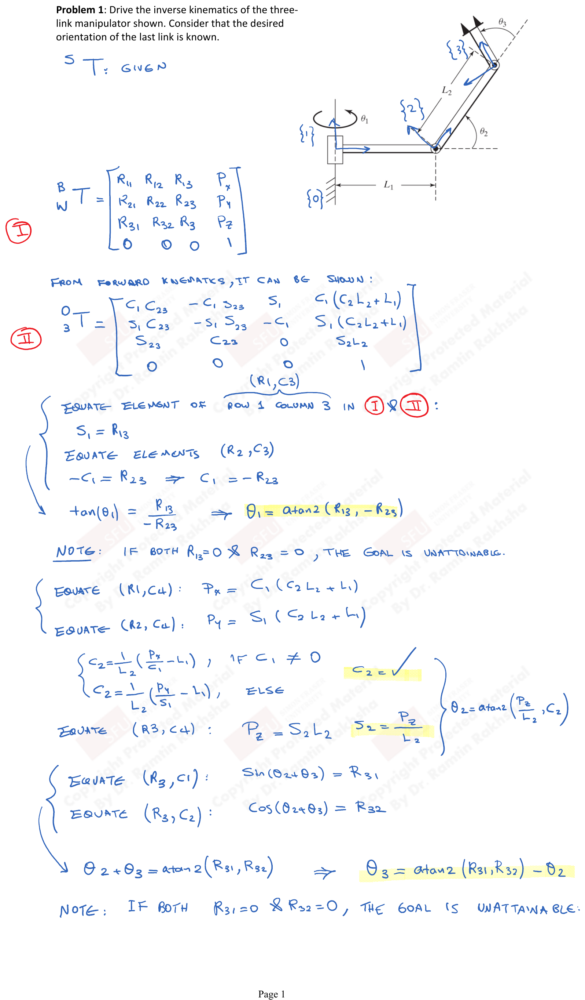
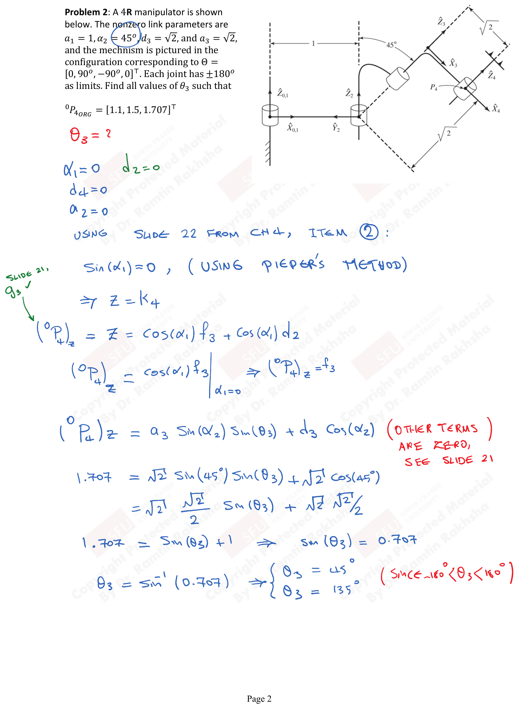

Tutorial 3: Forward & Inverse Kinematics
Problem: Derive the inverse kinematics of the three-link planar manipulator shown. Consider that the desired orientation of the last link is known.

Given: ${}^{S}_{3}T$ is given (desired end-effector pose).
$${}^{S}_{3}T = \begin{bmatrix} R_{11} & R_{12} & R_{13} & P_x \\ R_{21} & R_{22} & R_{23} & P_y \\ R_{31} & R_{32} & R_{33} & P_z \\ 0 & 0 & 0 & 1 \end{bmatrix}$$From forward kinematics, it can be shown:
$${}^{0}_{3}T = \begin{bmatrix} C_1 C_{23} & -C_1 S_{23} & S_1 & C_1(C_2 L_2 + L_1) \\ S_1 C_{23} & -S_1 S_{23} & -C_1 & S_1(C_2 L_2 + L_1) \\ S_{23} & C_{23} & 0 & S_2 L_2 \\ 0 & 0 & 0 & 1 \end{bmatrix}$$where $C_{23} = \cos(\theta_2 + \theta_3)$, $S_{23} = \sin(\theta_2 + \theta_3)$, etc.
Solving for $\theta_1$:
Equate element (row 1, column 3) in ${}^{0}_{3}T$:
$$S_1 = R_{13}$$Equate elements $(R_2, C_3)$:
$$-C_1 = R_{23} \quad \Rightarrow \quad C_1 = -R_{23}$$ $$\tan(\theta_1) = \frac{R_{13}}{-R_{23}} \quad \Rightarrow \quad \boxed{\theta_1 = \text{Atan2}(R_{13}, -R_{23})}$$Note: If both $R_{13} = 0$ and $R_{23} = 0$, the goal is unattainable.
Solving for $\theta_2 + \theta_3$:
Equate $(R_1, C_4)$: $P_x = C_1(C_2 L_2 + L_1)$
Equate $(R_2, C_4)$: $P_y = S_1(C_2 L_2 + L_1)$
$$C_2 = \frac{1}{L_2}\left(\frac{P_x}{C_1} - L_1\right), \quad \text{if } C_1 \neq 0$$ $$C_2 = \frac{1}{L_2}\left(\frac{P_y}{S_1} - L_1\right), \quad \text{if } S_1 \neq 0$$Equate $(R_3, C_4)$: $P_z = S_2 L_2$
$$S_2 = \frac{P_z}{L_2}$$ $$\theta_{2\text{(cand)}} = \text{Atan2}\left(\frac{P_y S_1}{L_2},\ C_2\right)$$Equate $(R_2, C_1)$: $\sin(\theta_2 + \theta_3) = R_{31}$
Equate $(R_3, C_1)$: $\cos(\theta_2 + \theta_3) = R_{32}$
$$\theta_2 + \theta_3 = \text{Atan2}(R_{31}, R_{32})$$ $$\boxed{\theta_3 = \text{Atan2}(R_{31}, R_{32}) - \theta_2}$$Note: If both $R_{31} = 0$ and $R_{32} = 0$, the goal is unattainable.
Problem: A 4R manipulator is shown. The nonzero link parameters are $a_1 = 1$, $\alpha_1 = 45°$, $d_3 = \sqrt{2}$, and $a_3 = \sqrt{2}$. The mechanism is pictured in the configuration corresponding to $\Theta = [0, 90°, -90°, 0]^T$. Each joint has $\pm 180°$ as limits. Find all values of $\theta_3$ such that:
$${}^{0}P_{\text{BORG}} = [1.1,\ 1.5,\ 1.707]^T$$
Given: $\theta_3 = ?$
Parameters: $\alpha_1 = 45°$, $d_2 = 0$, $d_4 = 0$, $\alpha_2 = 0$
Using Slide 22 from Chapter 4, Item (2):
Since $\sin(\alpha_1) \neq 0$ (using Pieper's method):
The position of the origin of frame $\{4\}$:
$$({}^{0}P_4)_z = a_3 \sin(\alpha_1) \sin(\theta_3) + d_3 \cos(\alpha_1)$$(Other terms are zero, see slide 21)
(Since $-180° < \theta_3 < 180°$)
Problem: Solve the forward kinematics of the Stanford manipulator, which has a $R \perp R \perp P \| (R \perp R \perp R)_{\text{sph}}$ layout.
DH Parameters:
| $i$ | $\alpha_{i-1}$ | $a_{i-1}$ | $d_i$ | $\theta_i$ |
|---|---|---|---|---|
| 1 | 0 | 0 | 0 | $\theta_1$ |
| 2 | $-90°$ | 0 | $d_2$ | $\theta_2$ |
| 3 | $90°$ | 0 | $d_3$ | $0$ |
| 4 | $-90°$ | 0 | 0 | $\theta_4$ |
| 5 | $90°$ | 0 | 0 | $\theta_5$ |
| 6 | 0 | 0 | 0 | $\theta_6$ |
Note: The link offset $d_2$ is a constant, and $d_3$ is the variable prismatic joint.
Homogeneous Transforms:
$${}^{0}_{1}T = \begin{bmatrix} C_1 & -S_1 & 0 & 0 \\ S_1 & C_1 & 0 & 0 \\ 0 & 0 & 1 & 0 \\ 0 & 0 & 0 & 1 \end{bmatrix}$$ $${}^{1}_{2}T = \begin{bmatrix} C_2 & -S_2 & 0 & 0 \\ 0 & 0 & 1 & d_2 \\ -S_2 & -C_2 & 0 & 0 \\ 0 & 0 & 0 & 1 \end{bmatrix}$$ $${}^{2}_{3}T = \begin{bmatrix} 1 & 0 & 0 & 0 \\ 0 & 0 & -1 & 0 \\ 0 & 1 & 0 & d_3 \\ 0 & 0 & 0 & 1 \end{bmatrix}$$ $${}^{3}_{4}T = \begin{bmatrix} C_4 & -S_4 & 0 & 0 \\ 0 & 0 & 1 & 0 \\ -S_4 & -C_4 & 0 & 0 \\ 0 & 0 & 0 & 1 \end{bmatrix}$$ $${}^{4}_{5}T = \begin{bmatrix} C_5 & -S_5 & 0 & 0 \\ 0 & 0 & -1 & 0 \\ S_5 & C_5 & 0 & 0 \\ 0 & 0 & 0 & 1 \end{bmatrix}$$ $${}^{5}_{6}T = \begin{bmatrix} C_6 & -S_6 & 0 & 0 \\ S_6 & C_6 & 0 & 0 \\ 0 & 0 & 1 & 0 \\ 0 & 0 & 0 & 1 \end{bmatrix}$$Forward Kinematics Result:
$${}^{0}_{6}T = {}^{0}_{1}T \cdot {}^{1}_{2}T \cdot {}^{2}_{3}T \cdot {}^{3}_{4}T \cdot {}^{4}_{5}T \cdot {}^{5}_{6}T$$Position vector:
$$P_x = -C_1 S_2\, d_3$$ $$P_y = -S_1 S_2\, d_3$$ $$P_z = -C_2\, d_3$$(Simplified; full expressions include $d_2$ terms.)
Rotation matrix elements:
$$r_{11} = C_1(C_2 C_4 C_5 C_6 - S_2 S_6) - S_1(S_4 C_5 C_6 + C_4 S_6) - C_1 S_2(S_5 C_6)$$ $$r_{12} = C_1(C_2 C_4 C_5(-S_6) - S_2 C_6) + S_1(-S_4 C_5 S_6 + C_4 C_6) + C_1 S_2(S_5 S_6)$$ $$r_{13} = C_1(C_2 C_4 S_5) + S_1(-S_4 S_5) - C_1 S_2 C_5$$ $$r_{21} = S_1(C_2 C_4 C_5 C_6 - S_2 S_6) + C_1(S_4 C_5 C_6) - S_1 S_2(S_5 C_6)$$ $$r_{22} = S_1 C_2(-C_4 C_5 S_6 - S_4 C_6) + C_1(-S_4 C_5 S_6 + C_4 C_6) - S_1 S_2(S_5 S_6)$$ $$r_{23} = S_1 C_2(C_4 S_5) + C_1(S_4 S_5) - S_1 S_2 C_5$$ $$r_{31} = S_2(C_4 C_5 C_6) + C_2(S_5 C_6)$$ $$r_{32} = S_2 C_4(-C_5 S_6) - C_2 S_5 S_6$$ $$r_{33} = S_2(C_4 S_5) + C_2 C_5$$Problem: Solve the inverse kinematics of the Stanford manipulator, which has a $R \perp R \perp P \| (R \perp R \perp R)_{\text{sph}}$ layout.
Let ${}^{0}_{6}T$ be the numerical homogeneous transform given for this problem:
$${}^{0}_{6}T = \begin{bmatrix} n_x & o_x & a_x & P_x \\ n_y & o_y & a_y & P_y \\ n_z & o_z & a_z & P_z \\ 0 & 0 & 0 & 1 \end{bmatrix}$$Step 1: Finding the position of the wrist
PDF p.4The wrist centre position $P'$ is:
$$P'_x = P_x - a_x d_6, \quad P'_y = P_y - a_y d_6, \quad P'_z = P_z - a_z d_6$$Since there is a spherical group of joints at the wrist, the position of the wrist is defined by the first three joints ($\theta_1$, $\theta_2$, $d_3$).
Step 2: Solving for $d_3$
Equating the position vector from ${}^{0}_{3}T$:
$$P'_x = -C_1 S_2\, d_3, \quad P'_y = -S_1 S_2\, d_3, \quad P'_z = C_2\, d_3$$Squaring and adding:
$$(P'_x)^2 + (P'_y)^2 + (P'_z)^2 = d_3^2$$ $$\boxed{d_3 = \pm\sqrt{(P'_x)^2 + (P'_y)^2 + (P'_z)^2}}$$Step 3: Solving for $\theta_2$
PDF p.5In theory there are two solutions, but given $d_3$ is a distance, we consider $d_3 > 0$.
$$C_2 = \frac{P'_z}{d_3}, \quad S_2 = \pm\sqrt{1 - C_2^2}$$ $$\boxed{\theta_2 = \text{Atan2}(S_2, C_2)}$$Note: If $d_3 = 0$, the solution is uncertain.
Step 4: Solving for $\theta_1$
$$C_1 = \frac{-P'_x}{S_2\, d_3}, \quad S_1 = \frac{-P'_y}{S_2\, d_3}$$ $$\boxed{\theta_1 = \text{Atan2}(S_1, C_1)}$$Step 5: Solving for Wrist Angles ($\theta_4$, $\theta_5$, $\theta_6$)
PDF p.5With solutions for $\theta_1$, $\theta_2$, and $d_3$, we compute ${}^{3}_{0}R$. We know:
$${}^{3}_{6}R = {}^{0}_{3}R^{-1} \cdot {}^{0}_{6}R = {}^{3}_{0}R \cdot {}^{0}_{6}R = \begin{bmatrix} r'_{11} & r'_{12} & r'_{13} \\ r'_{21} & r'_{22} & r'_{23} \\ r'_{31} & r'_{32} & r'_{33} \end{bmatrix}$$Comparing with the symbolic rotation:
$${}^{3}_{6}R = \begin{bmatrix} C_4 C_5 C_6 - S_4 S_6 & -C_4 C_5 S_6 - S_4 C_6 & -C_4 S_5 \\ S_4 C_5 C_6 + C_4 S_6 & -S_4 C_5 S_6 + C_4 C_6 & -S_4 S_5 \\ S_5 C_6 & -S_5 S_6 & C_5 \end{bmatrix}$$Solving for $\theta_6$:
PDF p.6 $$\boxed{\theta_6 = \text{Atan2}(-r'_{32}, r'_{31})}$$Two solutions: $\theta_6 = \text{Atan2}(-r'_{32}, r'_{31})$ and $\theta_6 = \text{Atan2}(r'_{32}, -r'_{31})$.
Solving for $\theta_5$:
$$S_5 = r'_{31} C_6 - r'_{32} S_6 \quad \text{and} \quad C_5 = r'_{33}$$ $$\boxed{\theta_5 = \text{Atan2}(r'_{31} C_6 - r'_{32} S_6,\ r'_{33})}$$Solving for $\theta_4$:
$$S_4 = -r'_{11} S_6 - r'_{12} C_6 \quad \text{and} \quad C_4 = r'_{21} S_6 + r'_{22} C_6$$ $$\boxed{\theta_4 = \text{Atan2}(-r'_{11} S_6 - r'_{12} C_6,\ r'_{21} S_6 + r'_{22} C_6)}$$Summary: Total Number of Solutions
PDF p.6There are a total of four solutions for this problem: 2 from $d_3$ ($\pm$) $\times$ 2 from $\theta_6$.
| Solution 1 | Solution 2 | Solution 3 | Solution 4 | |
|---|---|---|---|---|
| $\theta_1$ | 10.0000 | 10.0000 | -170.0000 | -170.0000 |
| $\theta_2$ | 13.1895 | 30.0000 | 150.0000 | 166.8105 |
| $d_3$ | 20.0000 | -20.0000 | 20.0000 | -20.0000 |
| $\theta_4$ | -13.1895 | 10.0000 | -190.0000 | -166.8105 |
| $\theta_5$ | 5.0000 | 5.0000 | -175.0000 | -175.0000 |
Note: $\theta_6$ values are not provided in the source solution table.